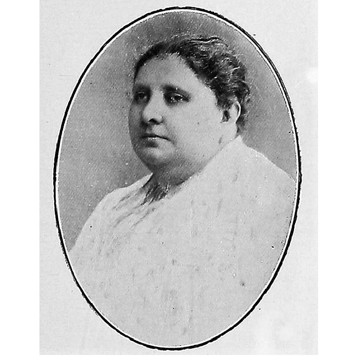

Consolidación del movimiento feminista (1923-1935)
En la década de 1920 surgieron nuevas organizaciones y espacios de discusión. En 1923 se celebró en la Ciudad de México el Primer Congreso Feminista Panamericano, donde se exigió la igualdad de derechos civiles, políticos y laborales para las mujeres.
Ese mismo periodo vio algunos avances regionales: en Yucatán y otros estados se reconocieron parcialmente los derechos políticos de las mujeres. Sin embargo, muchos de estos logros fueron temporales debido a cambios políticos.
En 1935 se fundó el Frente Único Pro Derechos de la Mujer (FUPDM), una organización que reunió a miles de mujeres de distintas ideologías con el objetivo principal de obtener el derecho al voto y la igualdad política.